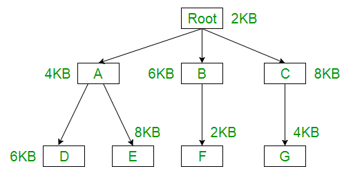

The main problem in Fixed partitioning is the size of a process has to be limited by the maximum size of the partition, which means a process can never be span over another.In order to solve this problem, earlier people have used some solution which is called as Overlays.
The concept of overlays is that whenever a process is running it will not use the complete program at the same time, it will use only some part of it.Then overlays concept says that whatever part you required, you load it an once the part is done, then you just unload it, means just pull it back and get the new part you required and run it.
Formally,
“The process of transferring a block of program code or other data into internal memory, replacing what is already stored”.
Sometimes it happens that compare to the size of the biggest partition, the size of the program will be even more, then, in that case, you should go with overlays.
So overlay is a technique to run a program that is bigger than the size of the physical memory by keeping only those instructions and data that are needed at any given time.Divide the program into modules in such a way that not all modules need to be in the memory at the same time.
Advantage –
- Reduce memory requirement
- Reduce time requirement
Disadvantage –
- Overlap map must be specified by programmer
- Programmer must know memory requirement
- Overlaped module must be completely disjoint
- Programmming design of overlays structure is complex and not possible in all cases
Example –
The best example of overlays is assembler.Consider the assembler has 2 passes, 2 pass means at any time it will be doing only one thing, either the 1st pass or the 2nd pass.Which means it will finish 1st pass first and then 2nd pass.Let assume that available main memory size is 150KB and total code size is 200KB
Pass 1.......................70KB Pass 2.......................80KB Symbol table.................30KB Common routine...............20KB
As the total code size is 200KB and main memory size is 150KB, it is not possible to use 2 passes together.So, in this case, we should go with the overlays technique.According to the overlays concept at any time only one pass will be used and both the passes always need symbol table and common routine.Now the question is if overlays-driver* is 10KB, then what is the minimum partition size required?For pass 1 total memory needed is = (70KB + 30KB + 20KB + 10KB) = 130KB and for pass 2 total memory needed is = (80KB + 30KB + 20KB + 10KB) = 140KB.So if we have minimum 140KB size partition then we can run this code very easily.
*Overlays driver:-It is the user responsibility to take care of overlaying, the operating system will not provide anything.Which means the user should write even what part is required in the 1st pass and once the 1st pass is over, the user should write the code to pull out the pass 1 and load the pass 2.That is what is the responsibility of the user, that is known as the Overlays driver.Overlays driver will just help us to move out and move in the various part of the code.
Question –
The overlay tree for a program is as shown below:

What will be the size of the partition (in physical memory) required to load (and
run) this program?
(a) 12 KB (b) 14 KB (c) 10 KB (d) 8 KB
Explanation –
Using the overlay concept we need not actually have the entire program inside the main memory.Only we need to have the part which are required at that instance of time, either we need Root-A-D or Root-A-E or Root-B-F or Root-C-G part.
Root+A+D = 2KB + 4KB + 6KB = 12KB Root+A+E = 2KB + 4KB + 8KB = 14KB Root+B+F = 2KB + 6KB + 2KB = 10KB Root+C+G = 2KB + 8KB + 4KB = 14KB
So if we have 14KB size of partition then we can run any of them.
Answer -(b) 14KB